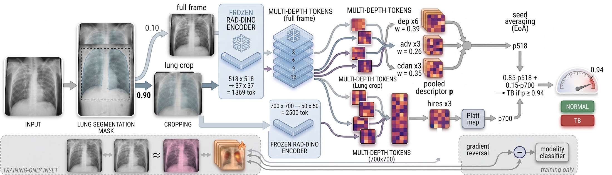
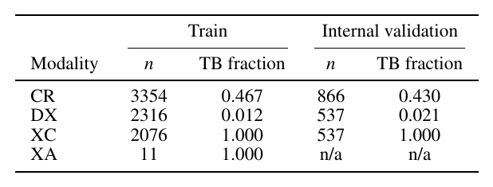
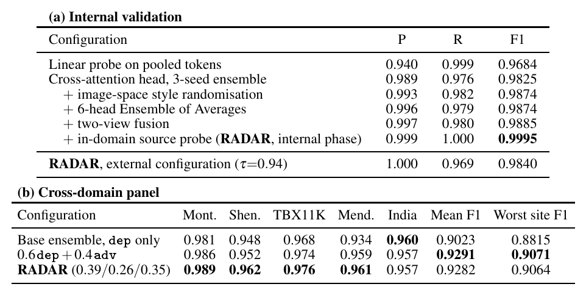
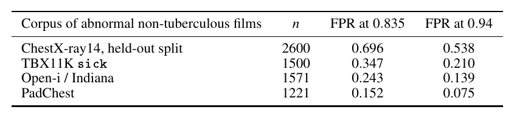
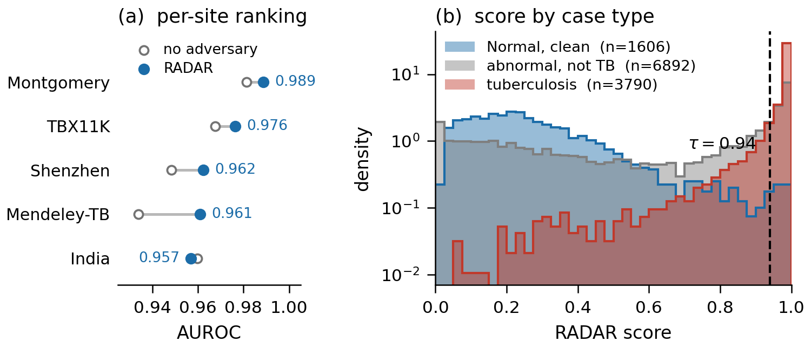
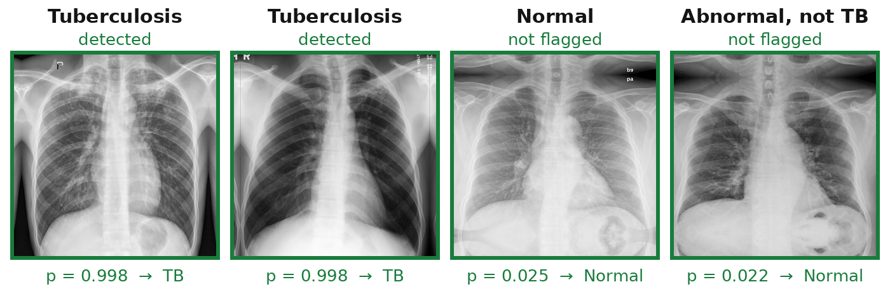

RADAR
RADAR: Acquisition-Adversarial Attention Pooling over a Frozen Chest-Radiograph Foundation Model for Tuberculosis Screening
Freeze RAD-DINO. Train only the read-out.
A TB query attends to local disease.
Adversaries remove acquisition style.
01 / ABSTRACT
Abstract
Reliable tuberculosis screening from chest radiographs requires models that remain robust across acquisition modalities and clinical populations. We present RADAR, a read-out framework that uses a frozen chest-radiograph foundation model and learns only lightweight task-specific heads. RADAR extracts patch representations from multiple depths of the frozen encoder and combines them with a learned tuberculosis query through cross-attention, allowing the classifier to selectively aggregate spatially localized disease evidence. To reduce reliance on acquisition-specific shortcuts, we train complementary heads with modality-adversarial and conditional adversarial objectives, while image-space style randomisation and prediction consistency further encourage acquisition-invariant representations. The resulting heads are ensembled across seeds and input views, with a higher-resolution read-out providing additional sensitivity to small focal abnormalities. The complete system requires no backbone finetuning and uses no acquisition metadata at inference. On MICCAI 2026 TREAT-MMTB Task 2, RADAR achieves an internal F1 of 0.9840 and an external F1 of 0.8375. Across five held-out public sites, the acquisition-adversarial design improves the worst-site F1 from 0.8815 to 0.9064. These results show that a frozen foundation representation combined with an acquisition-aware, attention-based read-out can provide a robust and efficient approach to cross-domain tuberculosis screening.

02 / METHOD
Method
- Preprocessing. Any bit depth or format (PNG, JPEG, TIFF, DICOM) is windowed to 8-bit grayscale. Lungs are located with the TorchXRayVision ChestX-Det PSPNet and cropped; an implausible mask falls back to the full frame. Inverted (MONOCHROME1-style) exports are detected against a reference embedding and corrected.
- Frozen encoder. RAD-DINO ViT-B/14 at 518 px gives a 37 × 37 token grid. Tokens from blocks {3, 6, 9, 12} are concatenated into 3072-d descriptors.
- Attention read-out. Each head is a single-query GLoRI / ML-Decoder cross-attention decoder trained with AdamW and a weight EMA. Three head groups share one encoder pass:
| Group | Heads | Training |
|---|---|---|
dep |
6 | CR-modality slice, 3 plain seeds + 3 seeds with style randomization (RandConv, Fourier amplitude, histogram matching) and weak/strong consistency |
adv |
3 | all modalities, gradient-reversal modality adversary (lambda = 1) |
cdan |
3 | all modalities, prediction-conditioned (CDAN+E) modality adversary |
- High-resolution read-out. The same frozen encoder at 700 px (50 × 50 tokens) is read by three further adversarial heads, Platt-mapped onto the 518 px probability scale.
- Decision rule.
p_518 = sum_k w_k [0.90 p_k(crop) + 0.10 p_k(full)], w = (dep 0.39, adv 0.26, cdan 0.35)
p_700 = sigmoid(1.425 * logit(p_hires) + 0.057)
p = 0.85 p_518 + 0.15 p_700, TB if p >= 0.94
Acquisition metadata is used only as the adversary target during training. Inference is image-only, offline and deterministic.
03 / RESULTS
Results
| Setting | Metric | RADAR |
|---|---|---|
| TREAT-MMTB Task 2, external cohort (Korea, Mongolia, Peru, Philippines) | F1 | 0.8375 |
| TREAT-MMTB Task 2, internal validation (1940 images), deployed container | F1 | 0.9840 |
| Five held-out public sites, four countries | worst-site F1 | 0.9064 (vs. 0.8815 for the dep group alone) |
From the paper





04 / CODE
Code and usage
Installation
git clone https://github.com/adinathdukre/RADAR-TB.git
cd RADAR-TB
conda create -n radar python=3.10 -y && conda activate radar
pip install torch torchvision --index-url https://download.pytorch.org/whl/cu121
pip install -r requirements.txt
pip install -e .
Pretrained Weights
The 15 trained heads and the polarity reference are hosted at adidukre/radar-tb:
hf download adidukre/radar-tb --local-dir weights
Alternatively, this step downloads the heads together with RAD-DINO and the lung segmenter:
python scripts/prepare.py --weights-repo adidukre/radar-tb
weights/
├── dep_plain_seed{42,1337,2024}.pt
├── dep_aug_seed{42,1337,2024}.pt
├── adv_seed{42,1337,2024}.pt
├── cdan_seed{42,1337,2024}.pt
├── hires_seed{42,1337,2024}.pt
└── polarity_ref.npy
Inference
python scripts/predict.py --input /path/to/images --output /path/to/output
This writes /path/to/output/prediction.csv with columns filename,TB/Normal, one row per image found under the input directory (searched recursively).
Add --with-prob to include the probability and --threshold to change the operating point.
From Python:
from radar.inference import Radar
model = Radar()
probs, labels = model.predict(["/path/to/image1.png", "/path/to/image2.png"])
Docker
The container reads /input and writes /output/prediction.csv, runs with --network none, and falls back to CPU when no GPU is visible.
HF_HOME=checkpoints/hf RADAR_CACHE=checkpoints python scripts/prepare.py --weights-repo adidukre/radar-tb
docker build -f docker/Dockerfile -t radar-tb .
docker run --rm --gpus all --network none \
-v /path/to/images:/input:ro \
-v /path/to/output:/output \
radar-tb
Training
Paths are set through environment variables (defaults in parentheses):
| Variable | Meaning |
|---|---|
RADAR_DATA |
challenge data root holding train/, test/, train.csv, test.csv (data/Task2/Data) |
RADAR_WORK |
lung boxes, token caches and public datasets (work) |
RADAR_TOKENS |
token cache, needs ~65 GB at 518 px and ~111 GB at 700 px (work/tokens) |
RADAR_WEIGHTS |
trained heads (weights) |
RADAR_CACHE |
segmenter weights (checkpoints) |
export RADAR_DATA=/path/to/Task2/Data
export RADAR_WORK=/path/to/work
Montgomery and Shenzhen (NLM) are downloaded automatically and used for checkpoint selection only. The high-resolution heads additionally select on the Pakistan (Mendeley) and India (NITRD DA/DB) sets; place them under $RADAR_WORK/external/{pakistan,india}/ either as tb/ and normal/ folders or with a labels.csv (filename,label).
Training pipeline
# 1. backbone, segmenter and selection sets
python scripts/prepare.py --proxies montgomery shenzhen
# 2. lung boxes
python scripts/segment.py --splits train test montgomery shenzhen pakistan india
# 3. dep group: image-space training through the frozen encoder
for s in 42 1337 2024; do
python scripts/train_base.py --seed $s
python scripts/train_base.py --seed $s --aug
done
# 4. adv and cdan groups: trained on cached 518 px tokens
python scripts/cache_tokens.py --res 518 --splits train test montgomery shenzhen
python scripts/train_adversarial.py --method dann --lam 1.0
python scripts/train_adversarial.py --method cdan --lam 1.0
# 5. high-resolution group and its Platt map
python scripts/cache_tokens.py --res 700 --splits train test montgomery shenzhen pakistan india
python scripts/train_adversarial.py --method dann --lam 1.0 --res 700
python scripts/fit_platt.py
# 6. polarity reference
python scripts/make_polarity_ref.py
Blend weights, Platt parameters and the threshold live in radar/config.py. Checkpoints are selected on public held-out sites and never on the challenge test data; the Platt map is fitted on internal validation only.
05 / CITATION
BibTeX
@inproceedings{rege2026radar,
title = {RADAR: Acquisition-Adversarial Attention Pooling over a Frozen Chest-Radiograph Foundation Model for Tuberculosis Screening},
author = {Rege, Atharva Atul and Dukre, Adinath Madhavrao and Shah, Sarth Santosh and Razzak, Imran},
booktitle = {MICCAI 2026 TREAT-MMTB Challenge},
year = {2026},
url = {https://openreview.net/forum?id=5qyZJRpe41}
}Acknowledgments
RADAR builds on RAD-DINO, TorchXRayVision and the ML-Decoder / GLoRI read-out. Please follow their licenses when using the pretrained models.
We thank the organizers of the MICCAI 2026 TREAT-MMTB challenge for the Task 2 training and evaluation data, and the providers of the public chest radiograph datasets used for model selection and evaluation.
Public datasets used for selection and evaluation
- Montgomery County and Shenzhen (U.S. National Library of Medicine): S. Jaeger et al., "Two public chest X-ray datasets for computer-aided screening of pulmonary diseases," Quantitative Imaging in Medicine and Surgery, 2014.
- TBX11K: Y. Liu et al., "Rethinking computer-aided tuberculosis diagnosis," CVPR, 2020. CC BY-NC-SA 4.0 (non-commercial).
- Mendeley: S. Kiran and I. Jabeen, "Dataset of Tuberculosis Chest X-rays Images," Mendeley Data, doi:10.17632/8j2g3csprk.2. CC BY 4.0.
- India DA and DB (National Institute of Tuberculosis and Respiratory Diseases, New Delhi): A. Chauhan et al., "Role of Gist and PHOG features in computer-aided diagnosis of tuberculosis without segmentation," PLoS ONE, 2014.
These datasets were used only for checkpoint selection and evaluation. No external dataset contributes training gradients to the released weights. Each dataset remains subject to its own terms; please obtain it from the original source.
Contact
For questions or collaboration, please open an issue or reach out to Adinath Madhavrao Dukre.
License
This project is licensed under the MIT License. See the LICENSE file for details.
RADAR is intended for research only. It is not approved for clinical use and must not inform any diagnostic or screening decision.